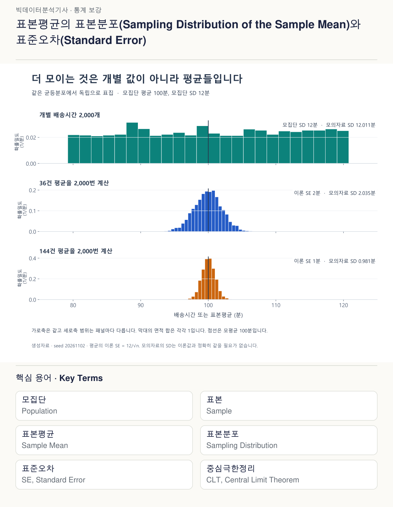
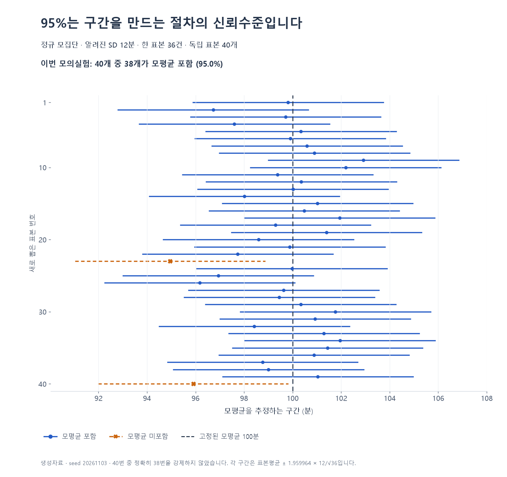

표본에서 구한 숫자는 출발점이고, 추론통계는 그 숫자로 어느 범위까지 판단할지 정하는 방법이다. 기술통계로 오늘 조사한 배달시간을 정리했다면, 이제 이렇게 묻는다. “이 결과를 보고 가게의 전체 평균도 비슷하다고 말할 수 있을까?”
이 글의 배달가게와 수치는 모두 교육용 가상 사례다. 먼저 기술통계 · 데이터를 읽는 법에서 평균과 표준편차를 읽고 오면 좋다.
1 오늘 본 주문과 알고 싶은 주문은 같은 범위일까
점심시간에 처리한 주문 36건의 평균이 100분이었다. 계산은 맞다. 그런데 이 36건으로 주말과 저녁까지 포함한 가게 전체의 평균이 100분이라고 말할 수 있을까?
점심 주문만 고르면 저녁의 교통 상황은 자료에 들어오지 않는다. 가까운 동네의 주문만 고르면 먼 지역도 빠진다. 많이 모았다는 것과 알고 싶은 대상을 잘 대표한다는 것은 다른 문제다.
| 구분 | 이 사례에서의 뜻 |
|---|---|
| 모집단 | 조사 대상으로 정한 기간·지역·영업 조건의 전체 주문 |
| 표본 | 그 모집단을 알아보기 위해 실제로 고른 주문 |
| 모수 | 알고 싶은 모집단 평균 μ, 모집단 표준편차 σ 같은 값 |
| 통계량 | 표본으로 계산하는 평균·표본분산 같은 양. 표본을 뽑기 전에는 어떤 값이 될지 달라질 수 있음 |
| 관측한 추정값 | 이번 표본에서 실제로 계산한 평균 100분처럼 구체적으로 나온 값 |
‘표본평균을 이용한다’는 계산 규칙은 추정량, 이번에 얻은 100분은 추정값이라고 구별할 수 있다. 어려운 용어보다 먼저 “무엇을 알고 싶은가, 무엇을 실제로 봤는가”를 나눠 적자.
표본 수를 늘리면 무작위로 생기는 흔들림은 줄일 수 있다. 그러나 저녁 주문을 계속 빼고 점심 주문만 더 모으는 방식으로는 누락 문제가 해결되지 않는다. 조사 전에 대상·표본틀·추출 방법을 확인하는 이유다.
잠깐 판단: 근처 주문 3,600건과 전체 지역에서 적절히 뽑은 주문 360건 중 어느 쪽이 항상 더 낫다고 할 수 있을까? 건수만으로 결정할 수 없다. 알고 싶은 대상과 추출 설계가 먼저다. 기존 표본틀 이론과 체험에서 이 차이를 확인할 수 있다.
2 한 건의 시간과 평균 시간은 다르게 흔들린다
다음 계산은 같은 모집단에서 서로 독립이고 같은 분포인 관측을 뽑으며, 모집단 분산이 유한하다고 가정한다. 먼저 모집단 SD가 12분으로 알려진 교육용 모형을 사용하자.
배달 한 건은 꽤 늦어질 수 있다. 반면 36건을 평균내면 빠른 건과 느린 건이 함께 들어오며 변동이 일부 상쇄된다. 다른 36건으로 다시 평균내면 새 평균을 얻는다. 이 평균들을 반복해서 모았을 때의 분포를 표본평균의 표본분포라고 한다.
| 대상 | 무엇의 흩어짐인가 | 이론적인 표준편차 |
|---|---|---|
| 배달 한 건 X | 개별 시간 | σ=12분 |
| 36건의 평균 | 반복해서 구한 36건 평균들 | SE=12/√36=2분 |
| 144건의 평균 | 반복해서 구한 144건 평균들 | SE=12/√144=1분 |
SD는 개별 값의 흩어짐을, 평균의 SE는 표본평균이 표본마다 흔들리는 정도를 나타낸다. n은 한 번 평균낼 때 쓰는 관측 수다. 모의실험을 몇 번 반복했는지와는 다르다.
왜 √n으로 나눌까? 독립인 값 n개의 합은 분산이 n배가 된다. 평균을 내려고 그 합을 n으로 나누면 분산은 n²으로 나누어진다. 결국 평균의 분산은 nσ²/n²=σ²/n, 그 제곱근인 표준오차는 σ/√n이다. 서로 관련된 관측에서는 공분산 항도 생기므로 같은 계산을 그대로 사용할 수 없다.
표본을 4배로 늘리면 평균의 SE는 절반이다. 개별 배달시간의 모집단 SD가 절반이 되는 것은 아니다.

그림은 평균100·SD12인 균등모집단에서 만든 모의실험이다. 실제 표본의 SD와 모의 평균들의 SD는 이론값과 정확히 같을 필요가 없다. 생성 모형·반복수·seed는 그림에 함께 표시했다. 평균의 표본분포와 n의 뜻은 OpenStax 표본평균 설명에서도 확인할 수 있다.
3 중심극한정리는 원자료를 바꾸지 않는다
원자료가 고르게 퍼져 있는 균등분포라면, 표본을 더 많이 모아도 원자료의 모집단은 그대로 균등분포다. 바뀌는 것은 여러 관측을 평균낸 값들의 분포다.
중심극한정리는 독립·동일분포이고 분산이 유한한 양수인 등의 조건에서, 평균에서 모평균을 빼고 평균의 SE로 나눈 값의 분포가 정규분포에 가까워진다는 내용이다. 표본평균을 정규모형으로 근사할 근거를 준다. 어느 크기부터 근사가 충분한지는 꼬리와 비대칭 등 원래 분포에 따라 달라진다. n≥30이라는 숫자 하나로 항상 보장되지 않는다.
정리하면 세 질문을 나눠야 한다. 평균의 중심은 무엇인가? 얼마나 흔들리는가? 분포 모양은 무엇으로 근사할 수 있는가? 앞의 표에 있는 평균과 SE 공식이 맞는 것과 정규 근사가 충분한 것은 같은 판단이 아니다.
잠깐 판단: 반복해서 36건 평균을 계산했더니 종 모양이 나타났다. 개별 배달시간도 정규분포로 바뀌었을까? 아니다. 평균들의 분포와 원자료의 분포를 구별해야 한다. 기존 표본평균 이론으로 이어 읽을 수 있다.
4 평균 하나 옆에 불확실성의 범위를 붙인다
이번에는 정규모집단에서 독립으로 뽑고 모집단 SD σ=12분을 알고 있는 별도의 모형으로 넘어간다. 앞 그림의 균등분포와 구별하자. 표본 수36, 이번 표본평균100분이면 평균의 SE는2분이다.
점추정은 모평균을 하나의 숫자 100분으로 추정한다. 구간추정은 그 주변에 범위를 붙인다. 양측95% z신뢰구간을 계산할 때, 표준정규분포의 가운데 약95%에 해당하는 경계값 1.96을 사용한다.
표본평균 ± 임계값 × 평균의 SE
100 ± 1.96×2 = [96.08, 103.92]분
공식의 각 부분에 역할이 있다. 가운데 100은 이번 표본의 위치, SE2는 평균이 표본마다 흔들리는 크기, 1.96은 선택한 신뢰수준과 방법에서 정한 배수다. 더 높은 신뢰수준을 요구하면 같은 자료에서 보통 더 넓은 구간이 필요하다. 더 좁은 구간을 원한다면 신뢰수준뿐 아니라 표본 수와 산포도 함께 봐야 한다.
그렇다면 95%는 어디에 붙는 말일까? 같은 모집단에서 같은 방식으로 표본을 뽑아 구간을 계속 만들면, 그 절차로 만든 구간들이 고정된 모평균을 포함하는 장기 비율이95%다. 이번 구간 안에 관측값의95%가 들어간다는 뜻이 아니다. 계산이 끝난 한 구간은 모평균을 포함하거나 포함하지 않는다. 이 해석에서 이미 계산한 한 구간에 대해 ‘모평균이 그 안에 있을 확률이95%’라고 바꾸어 읽지 않는다. NIST 신뢰구간 해석과 z구간

그림에서는 모의실험을 만든 사람이 참값100을 정해 두었으므로 포함 여부를 확인할 수 있다. 실제 자료에서는 바로 그 모평균을 모르기 때문에 구간을 구한다. 40개 중 정확히38개가 포함되도록 표본을 고른 것은 아니며, 유한 반복에서 관측한 포함 비율은95%와 다를 수 있다.
현실에서는 σ를 모르는 경우가 많다. 정규모집단의 독립 표본에서 σ 대신 표본 SD s=12를 사용하는 경우에는 자유도35의 t임계값 약2.0301로 계산한다. 같은 표본평균100·n36이라도 구간은 약 [95.94, 104.06]분이다. 자료에서 산포까지 추정한 불확실성을 반영한 것이다. ‘표본 SD를 구했으니 언제나1.96’으로 처리하지 말자. NIST 평균의 t신뢰구간
5 차이 5분이 평균의 흔들림에 비해 큰가
가게의 기준 평균을100분이라고 두고 “실제 평균이100분과 다른가?”를 묻자. 다음 검정 예시는 다시 독립인 정규모집단·알려진 σ=12분의 z검정이다. 자료를 보기 전에 양측검정과 유의수준 α=.05를 정했다고 가정한다.
- 귀무가설 H0: μ=100분.
- 대립가설 H1: μ≠100분.
- 이번 관측: n36, 표본평균105분.
차이는5분이고 평균의 SE는2분이다. 검정통계량은 차이를 평균의 흔들림 단위로 바꾼 값이다.
z = (105−100)/2 = 2.5
H0와 모형 가정이 맞다면 z는 표준정규분포를 따른다. 양측 p값은 그 모형에서 z≥2.5 또는 z≤−2.5처럼 관측한 통계량만큼 또는 더 극단적인 결과가 나올 확률이며 약.0124다. 값105 자체가 나올 확률이나 H0가 참일 확률을 계산한 것이 아니다.
사전에 정한 규칙이 p≤α이면 기각이고 α=.05이므로 H0를 기각한다. 문장으로 쓰면 “명시한 모형과 표집 가정 아래, 모평균이100분이라는 가설에 반하는 근거가 있다”가 된다. α=.01로 정한 별도의 계획이었다면 같은 p값으로는 기각하지 못한다. 결과를 보고 α나 단측·양측을 골라 바꾸면 사전에 정한 검정이 아니다.
기각 못함은 같음의 증명이 아니다. 표본이 적거나 산포가 크면 실제 차이가 있어도 뚜렷한 근거를 얻기 어렵다. 반대로 아주 큰 표본에서는 실무적으로 작은 차이도 유의할 수 있다. 차이의 크기와 구간, 의사결정에서 중요한 최소 차이도 함께 읽어야 한다. ASA p값 성명의 원칙
6 잘못 울린 경보와 놓친 변화를 구별한다
배달시간이 달라졌다는 검정은 경보와 닮은 점이 있다. 그러나 오류의 이름은 ‘실제로 H0가 참인지’와 ‘검정이 기각했는지’를 함께 놓아야 정해진다.
| 실제 상태 | H0를 기각 | H0를 기각하지 못함 |
|---|---|---|
| H0가 참 | 제1종 오류 | 올바른 판단 |
| H0가 거짓 | 변화를 검출 | 제2종 오류 |
α는 유효한 검정에서 H0가 참일 때 잘못 기각할 확률을 통제하는 기준이다. 검정력은 특정한 실제 차이가 있을 때 그 차이를 검출할 확률이다. 그 차이에서 제2종 오류확률 β가.20이면 검정력은 1−β=.80이다. 어떤 실제 차이를 말하는지 빼고 검정력80%라고만 쓰면 정보가 부족하다.
같은 검정에서 표본 수·산포·특정 차이를 고정하고 α를 낮추면, 기각하기가 어려워져 제1종 오류 위험은 줄지만 그 차이를 놓칠 가능성은 커진다. 표본 수를 늘리거나 구별하려는 차이가 더 크면 검출 가능성을 높일 수 있다. 두 오류를 생각하지 않고 ‘더 엄격하면 모든 면에서 좋아진다’고 판단하지 말자. NIST 표본 수와 α·β·산포의 관계
7 검정 이름보다 비교할 대상을 먼저 적는다
“어떤 함수를 쓰지?”보다 “무엇의 차이를 묻고 있지?”가 먼저다. 다음 표는 후보를 찾는 길잡이다. 정규성 검정 p값 하나로 함수를 자동 선택하는 표가 아니다.
| 질문 | 먼저 확인할 설계와 가정 | 검토할 방법 |
|---|---|---|
| 한 집단의 평균이 기준과 다른가 | 독립 관측, 평균모형과 산포 정보 | 정규모형 또는 타당한 정규근사에서 σ를 알 때 z, σ를 추정하는 정규표본에서는 단일표본 t |
| 서로 다른 두 집단의 평균이 다른가 | 집단 간 독립, 평균 추론의 타당성, 등분산 여부 | Welch t 또는 등분산을 가정한 독립표본 t |
| 같은 사람이나 같은 주문 단위의 전후가 다른가 | 짝의 정의, 짝 간 독립, 차이의 분포 | 대응표본 t. 정규모형은 두 열 각각보다 차이를 대상으로 확인 |
| 세 집단 이상의 평균이 모두 같은가 | 독립집단, 정규오차·등분산 등 | 일원 ANOVA. 기각해도 모든 쌍이 다르다는 뜻은 아님 |
| 범주형 두 변수의 관련성이 있는가 | 독립 관측, 도수표, 기대도수와 근사 조건 | 카이제곱 독립성 검정. 적합도 검정과 구별 |
| 순위나 분포를 비교할까 | 독립/대응, 질문, 대칭성 등 해당 검정의 조건 | Mann–Whitney, 부호순위, 부호검정 등을 구별 |
비모수라고 가정이 없는 것은 아니다. 부호순위검정은 대응 차이의 대칭성 등을 확인해야 하고, Mann–Whitney 결과를 조건 없이 중앙값 차이로 읽지 않는다. 함수별 조건은 SciPy 독립표본 t검정과 부호순위검정에서 확인할 수 있다.
검정 결과만으로 인과관계도 정해지지 않는다. 새 배달 시스템을 도입한 뒤 시간이 줄었더라도 날씨·주문 지역·업무량이 달라졌을 수 있다. 표집은 어떤 대상에 일반화할지, 무작위 배정 같은 연구 설계는 원인에 관한 주장을 어떻게 뒷받침할지와 연결된다. 어떤 설계로 얻은 자료인지 결과 해석에 함께 적어야 한다.
8 결과를 한 문장으로 쓴다면
결과를 적을 때는 대상과 설계 → 추정한 차이와 불확실성 → 검정 판단 → 해석 범위를 순서대로 쓴다.
앞의 z검정 예시를 사용하면 이렇게 정리할 수 있다.
정규모집단에서 독립으로 뽑은36건, 알려진 모집단 SD12분을 가정했을 때 표본평균은105분이었다. 기준100분과의 차이는5분이고 모평균의 양측95% z구간은 약[101.08,108.92]분이다. 사전에 α=.05로 정한 양측검정의 p값은 약.0124로 H0를 기각한다. 이 결과만으로 지연의 원인이나5분 차이의 운영상 중요성까지 판단할 수는 없다.
공식 이름보다 이 문장의 각 부분에 어떤 입력과 가정이 필요한지 설명할 수 있는지 확인하자.
스스로 확인할 세 질문
표본을4배로 늘렸는데 개별 배달시간의 모집단 SD도 절반이라고 썼다. 맞을까?
p=.20이라서 두 평균이 같다고 입증했다고 썼다. 맞을까?
95% 신뢰구간이 좁으면 표집 대상 누락도 해결된 것일까?
직접 확인하고 이어 읽기
- SD와 SE: 기존 표본평균 체험 → 관련 문제.
- 구간의 폭: 기존 신뢰구간 체험（기존 예제: 평균40·표본SD10·n=25·t24, 신뢰수준 변경） → 관련 문제.
- p값과 판단: 기존 가설검정 체험 → 관련 문제.
- 독립과 대응: 기존 비모수 이론.
- 카이제곱과 회귀의 다음 단계: 교차표, 적합도, 회귀 t검정, 전체 F검정.